Explore Astana
A Brief History
Astana became Kazakhstan's capital in 1997, replacing Almaty with a planned city on the steppe beside the Ishim River. Norman Foster's Khan Shatyr, the Bayterek tower, and symmetrical government districts embody post-independence nation-building and oil wealth. The city symbolises Kazakhstan's move to centre administration in the north while preserving nomadic and Soviet legacies in its museums.
Attractions Map
Top Sights & Activities
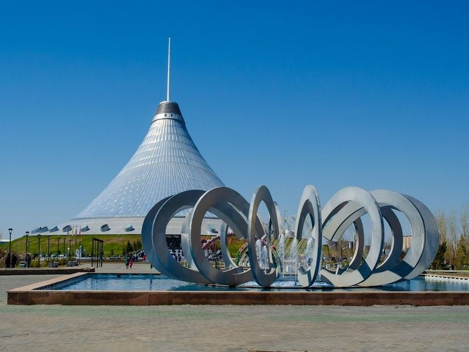
Lovers Park
Lovers Park in Astana is a beautiful green space with lush trees, serene ponds, and plenty of seating areas. It offers a tranquil path for leisurely strolls and a perfect spot to rest on benches. Adjacent to the striking Astana Opera, the park provides an unexpected oasis in the midst of urban surroundings. Visitors can relax and take breaks from exploring other tourist attractions in Astana while enjoying the modern facilities and cleanliness of the park.
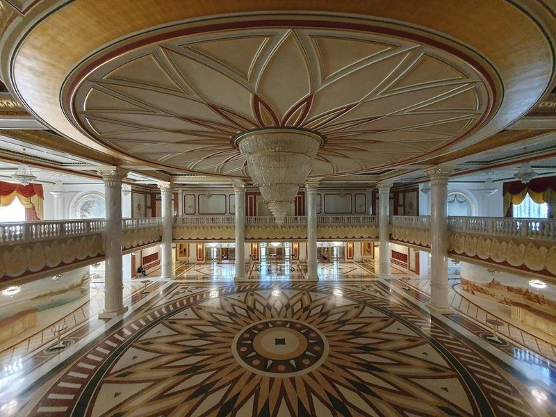
Astana Opera
Astana Opera is a magnificent cultural gem in the heart of Kazakhstan, showcasing the splendor of classical European architecture blended with unique Kazakh elements. This grand opera house spans an impressive 64,000 square meters and features a interior that captivates visitors. Renowned for its performances in opera, ballet, and classical music, attending a show here promises to be an experience steeped in rich Kazakh culture.
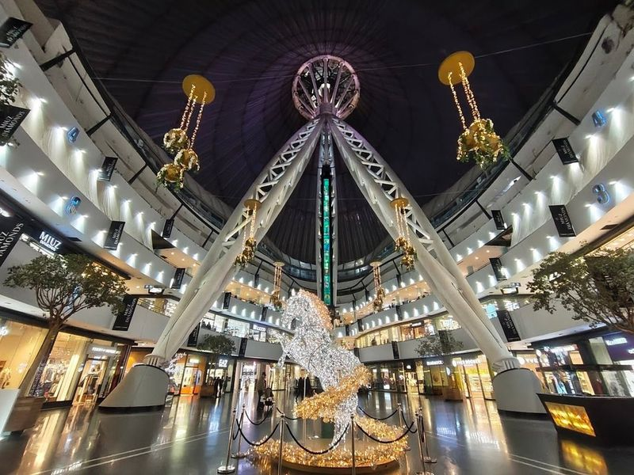
Khan Shatyr
Khan Shatyr, a renowned shopping and entertainment complex, boasts over 200 stores and eateries along with a cinema. This futuristic tent-like landmark, known as the Royal Marquee globally, showcases a cutting-edge approach to engineering. Situated on Turan Avenue in bustling Astana, it offers various attractions like a boating river, an indoor beach, minigolf, and a shopping center.
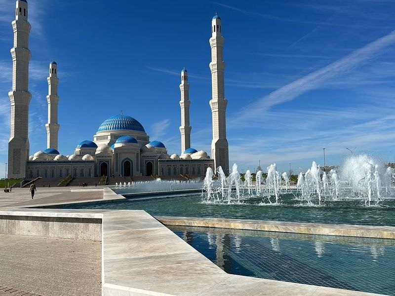
Nur-Astana Mosque
Nur Astana Mosque is a new and expansive mosque located in the heart of a beautiful and peaceful town. It features gilded domes, a modern contemporary architectural style, and a colorful interior that combines traditional Islamic architecture with modern elements. The mosque represents the contrasting identity of traditions and progress that the Kazakh people are known for. Its proximity to other popular attractions makes it easily accessible for visitors.
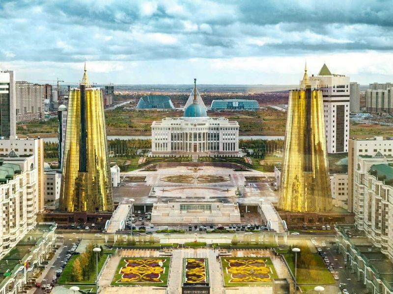
Baiterek
Baiterek, also known as Astana-Baiterek, is a striking monument in Nurzhol bulvar that has become a symbol of modern Astana. The 97-meter-high tower is designed to resemble a trophy and features a large glass orb at the top, representing the Kazakh legend of the mythical bird Samruk laying a golden egg in a tall poplar tree.
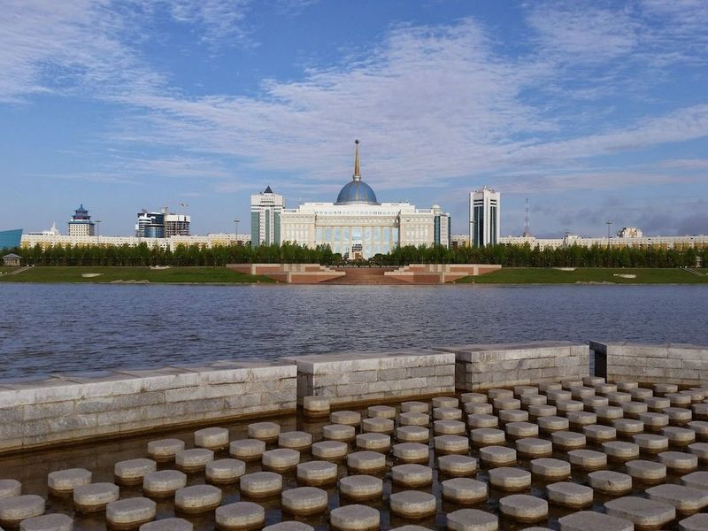
Ak Orda Presidential Palace
Ak Orda Presidential Palace, located in Nur-Sultan, is the official place of work for the Kazakh president and his staff. The construction of this grand building took 3 years and utilized the latest technologies. It features a blue and gold dome topped with a spire, standing at a height of 80 meters with four floors. While it's not the residence of the president, it is an impressive structure that shouldn't be missed when visiting Astana.
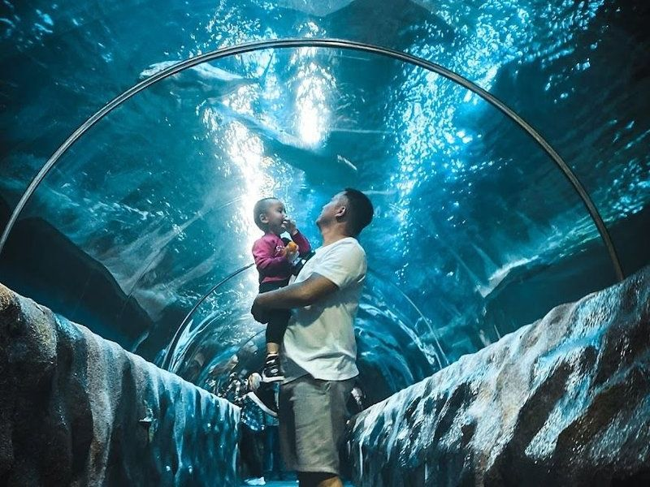
Ailand
Ailand is a remarkable indoor water park and marine aquarium that spans over 8,500 square meters, making it an ideal destination for families seeking fun and adventure. With the capacity to host up to 1,500 visitors, Ailand offers a plethora of attractions including a lazy river, wave pool, children's animation programs, and thrilling slides. The food court ensures refuel after all the excitement.
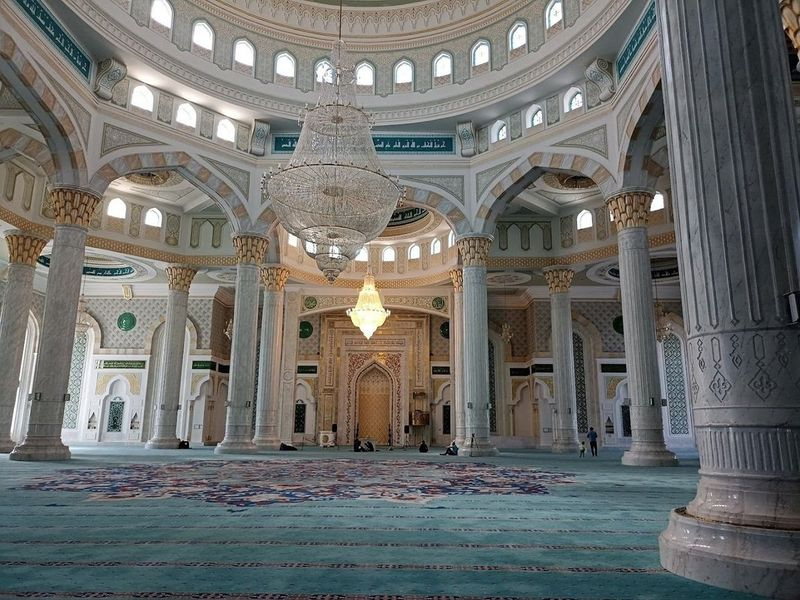
Hazrat Sultan Mosque
Hazrat Sultan Mosque, completed in 2012, is a architectural marvel located in the heart of Astana, Kazakhstan. This grand mosque features classical Islamic design elements with a blend of Kazakh and Ottoman influences. It is mosques in Central Asia, capable of accommodating up to 10,000 worshippers at once.
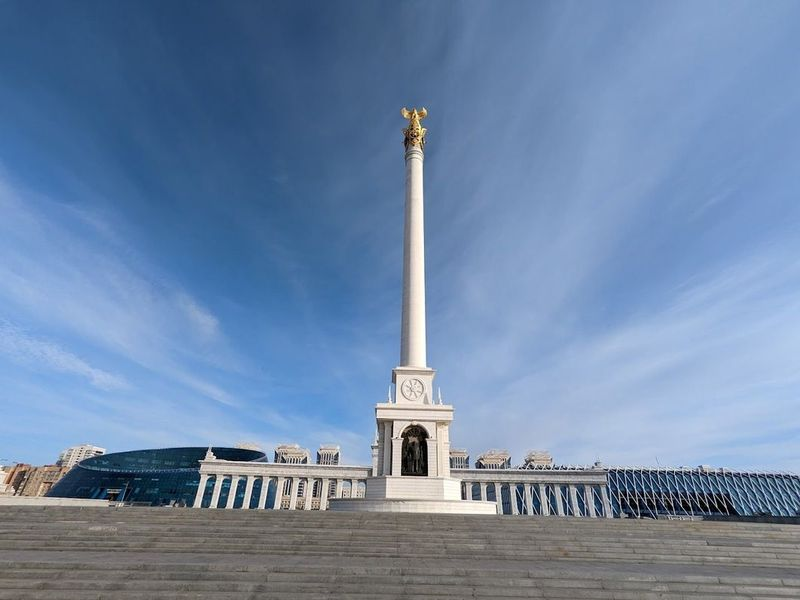
Kazakh Eli Monument
The Kazakh Eli Monument is a striking tribute to Kazakhstan's independence and rich cultural heritage, standing proudly at 91 meters tall in Independence Square, Astana. This impressive structure was erected to commemorate the nation's sovereignty gained in 1991. The monument features bronze statues that celebrate the history and spirit of the Kazakh people.
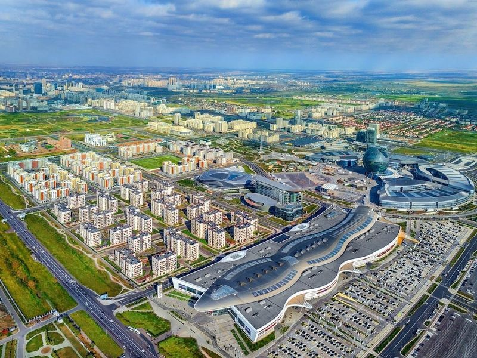
Mega Silk Way
Mega Silk Way, a major tourist attraction in Astana, Kazakhstan, is a significant project initiated by the government to boost tourism and the economy. Opened in 2017 by the Presidents of Kazakhstan and Uzbekistan, it offers a wide range of experiences. The shopping center within Mega Silk Way is the largest mall in Astana, featuring international and local stores, a food court, entertainment options like Chaplin Cinema and an ice rink.
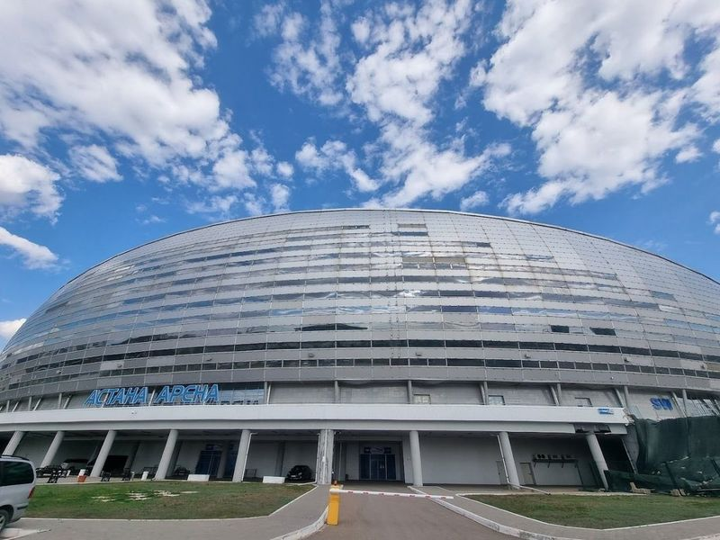
Astana Arena
Located in Astana, Kazakhstan, the Astana Arena is a state-of-the-art football stadium with a seating capacity of 30,000 and a retractable roof. It serves as the national stadium for the Kazakhstan national football team and is also home to FC Astana and FC Bayterek. The arena boasts modern facilities including comfortable seating, contemporary football pitch, and climate control systems suitable for all seasons.
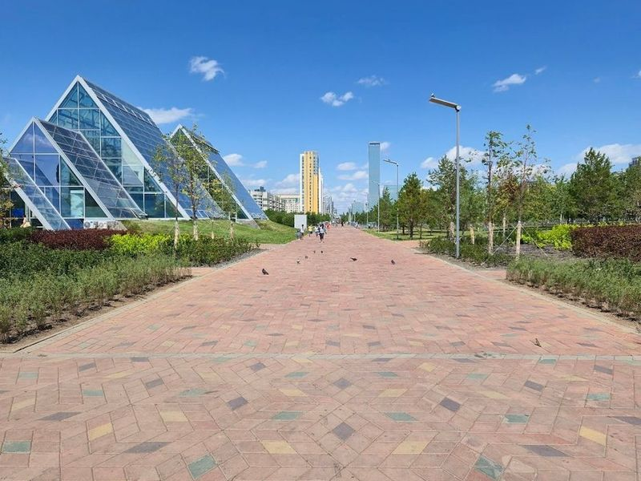
Botanical Garden
The Botanical Garden in Astana, established in 2012 and opened to the public in 2018, is a relatively new but modern park offering various amenities not commonly found in other parks. It boasts nearly 90,000 trees and shrubs, making it a sight with beautiful flowers and trees. Visitors can enjoy jogging, cycling, and skating paths as well as an ice rink during winter.
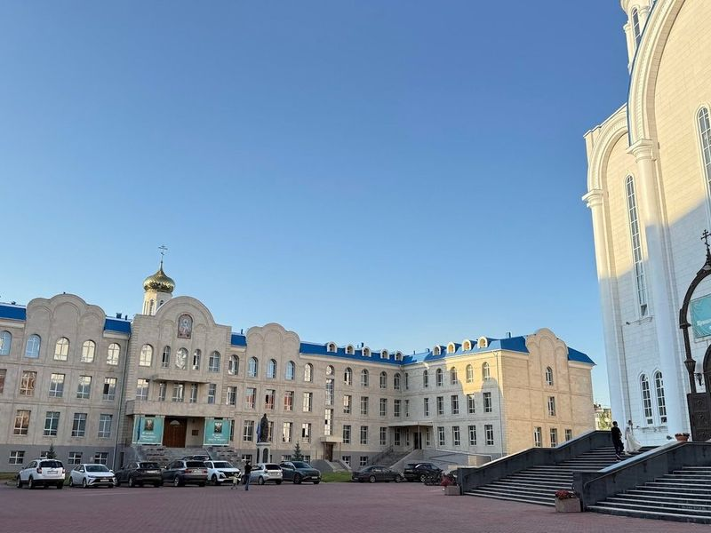
Catedrala Adormirea Maicii Domnului
Assumption Cathedral in Astana, Kazakhstan is a Orthodox church that offers the opportunity for pilgrimage and simple accommodation with basic amenities. Visitors describe it as a place of unmissable beauty, wisdom, and spirituality. The interior is described as impressive and beautifully decorated, directing all senses to God. The cathedral also offers underground services and has a shop on-site.